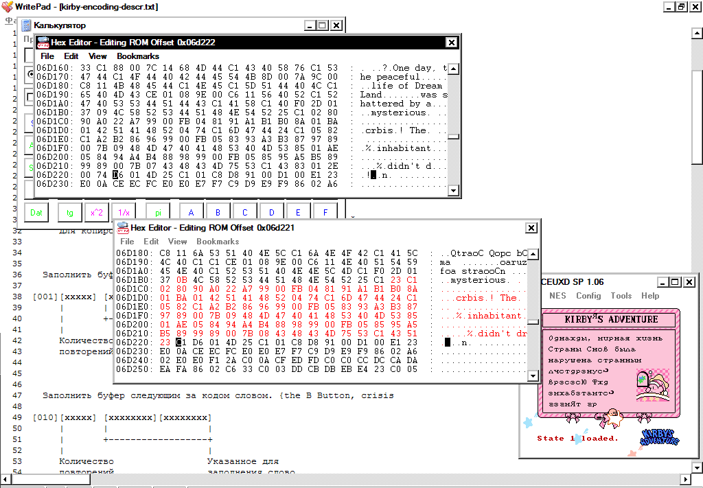

| NEWS | ARTiCLES | PASSGENS | ARCHiVE | ABOUT ME |
A bit of history.
The history of my acquaintance with the HAL’s compression algorithm begins in 2004. That time I have just started entering romhaking scene and carefully studied all the documents on hacking console games that fell into my hands. The CaH4e3’s document, of course, has become a milestone not only on my way of learning. Completely different principle (at that time) of pointer searching through debugging opened up wide opportunities for the translation of even most complicated games. Pointers system for NES game Kirby’s Adventure was also described in this document. It is casually mentioned that the tile maps are compressed and at the very beginning of the Kirby’s Adventure paragraph the code addresses relating to the unpacking procedure are given.
In 2009, having already mastered IDA for disassembling necessary code, I have also found this procedure without any problems for the training purposes. You can check the flowchart of this procedure with all subroutines here (warning, high resolution).
In the same 2004, CaH4e3 reverses the algorithm of data compression, describes it briefly in the file ‘kirby-encoding-descr.txt’ and puts it on one of the Russian-language emulation forums. You can read it (with some of my notes) here.
And in the same year, Parasyte also describes this algorithm, and codes a working unpacker in C. Any traces of this have already been lost, but I have kept everything for the record here.
Both of these guys are absolutely right: the game uses a hybrid algorithm to compress tile maps, which, using the 3 most significant bits of the control byte, can unpack the data in six different ways (in short, these are variations of LZ and RLE).
In 2007, I have completed the game several times on the emulator for PSP and was surprised by the advancement of this game. I’ve started to think about translating this game. This, of course, required modification of compressed tile maps.
Back in 2003 (before Cah4e3 and Parasyte activities) the game was translated into Swedish here. I have contacted the hacker of this translation via email and, to my regret, found out that the translation was done by hands, without repacking tile maps, and the similarity of Swedish and English languages helped a lot these guys.
I had also an idea of editing compressed maps manually. Below is screenshot, where I have added two letters to the word inhabitant, having recompressed the stream manually.

But there are several dozens of such maps in the game and changing each of them - a task beyond my mortal powers.
In parallel, in 2007, new details about the location of the game resources are being found here and here. At that time I was writing simple RLE packers and could not understand even the general idea of how an effective packer might look like for such a scheme. I also had the experience of pushing already unpacked data to the game after ROM’s expansion. I translated this way Bee-52 by Codemasters, where graphics was compressed with very hard to understand statistics coder. But in the case of Kirby’s Adventure, the game already contained the maximum number of banks for its MMC3 mapper. I could not and did not want to transfer the game into another mapper, and I would have to rewrite code for the unpacking of the extracted data in so many places. This option was inefficient.
I once even wrote an email to the HAL laboratory (they are still alive), but of course got no answer.
Comparing candidates at each step.
In 2005, appears the first compression tool for this algorithm. I have tried to use the compiled library in every possible way for sure, even reversing its with IDA, but did not achieve anything. The code just didn’t work. Having written to the author - Sukasa, I found out that this library was written in VB, absolutely without testing and re-checking the compression-decompression. The author was so nice that he has sent me the source code, but I did not dig into the someone else’s code in a new language for me - there was no guarantee that it would work at all, if it did not work now. Do not ask me how Sukasa decided to release untested compiled dll at romhacking.net.
Nevertheless, from the source code of this packer, a simple and sensible idea has appeared: simply take a position in the unpacked stream and calculate all six methods of compression for it, choose the one that gives the largest size gain in the compressed stream and save it. Then repeat the same for the position we will get to if we use the previous method. Of course, it’s rather slow, but effective. Later I learned that this is the standard strategy for hybrid packers.
In 2009, CaH4e3 dumps ‘Wario land’ - the Chinese hack of Kirby’s Adventure with a redecorated title screen and a truly repacked tile map of this title.
Apparently, either the Chinese guys wrote a packer (with the same or better efficiency than original), or put at the hex editor a poor Chinese peasant and forced him to manually pack 0x400 bytes of the title screen for a minimum payment. In any case, the likelihood that I will have a working compressor in my hands would not increase, because there was no one to communicate with in China.
Having gained some experience in programming in Delphi and armed with a simple scheme, described above, I have come at creating a tool for compression and decompression. I have written unpacker very carefully, breaking it into a lot of carefully tested procedures and the packer on this basis also came out almost with no debugging. So I have happily escaped the main danger - to drown in a pile of code. The title screen was compressed by my tool in the same size as the original one. After finally inserting it back, I began to test the compressor on other tile maps. But sadly, my packer compressed some intro screens 3-5 bytes worse than the original one. For my purposes of translation, this result was not acceptable. After all, I needed to edit only a few tile maps and I did not need to compress all the maps in a row in the hope that somewhere it would compress better and compensate for the previous increased size. And I began to investigate why the original packer compressed better than mine.
Looking ahead.
Consider the initial stream of characters: ABCDEFG … XABCZZ … | XABCDEFG
The vertical bar indicates the position with which you continue to compress. If only the LZ method is taken into account, LZ is most advantageous at this position, referring to the previous occurrence of XABC (4 symbols). But if you now throw one uncompressed letter X, you can immediately take LZ to the first occurrence of “ABCDEFG” (7 characters). Given the game serialization scheme (see any description of the compression format), the first option will take 3 bytes to the first LZ “XABC” in the compressed stream plus 3 bytes to the second LZ “DEFG” (6 bytes). And in the second case, it will occupy 2 bytes for the raw “Z” character, then 3 bytes for LZ “ABCDEFG” (only 5 bytes). As a result, the second option will result in compressed file size reduction by 1 byte. This situation is quite standard for LZ, but in the case of the HAL algorithm, sometimes there is also a gain when you select [some_method_now] or [raw_byte_and_RLE_method_after].
Several of such situations occurred in the tile map for intro, and resulted in my packer compressing several bytes worse than the original. Well, you can simply take and look 1 byte ahead, comparing already the maximum gains from all six methods at the current position and the next. But what if the original packer looked 2 bytes ahead, or 3? What if all the rest of bytes till the incoming block? I had no other options but to implement a look ahead one byte and check the result.
That time Marat from chief-net helped me a lot: he has modified my Delphi code to look 1 byte ahead, and then, I figured out and rewrote the look ahead code in a form understandable for me. The result was acceptable - tile maps were compressed either into the same size, or even a couple of bytes less. It turns out that the original packer also looked no more than 1 byte.
Later, I found out that looking at 1 byte forward is commonly used practice in string parsing when compressing LZ.
This situation is studied in “The Effect of Non-Greedy Parsing in Ziv-Lempel Compression Methods.” R. Nigel Horspool Dept. of Computer Science, University of Victoria. And, for example, in the “Deflate data format specification” (item 4), this method is called “lazy matching”. Looking forward more than 1 byte is perfectly considered in this note by cbloom. Here it is called a chain scheme. And looking till the end of the incoming block is generally called spatially optimal parsing (you can read about it in serious sources: “On the bit-complexity of Lempel-Ziv compression” by Paolo Ferragina, Igor Nitto, and Rossano Venturini and “Dictionary-symbolwise flexible parsing” by Maxime Crochemore, Laura Giambrunoe, Alessio Langiu, Filippo Mignosi, Antonio Restivo.) and I will say a few words about it later.
Anyhow, for the purpose of translation, such a decision was already enough - you can write batch unpackers / packers and translate the game. By the way, in the beginning of 2018 there was no definitive translation into Russian of this remarkable game. For example, the Shedevr translation here or runesification here (both 2003 - 2004) are incomplete because the hackers did not master the compression of the tile maps. My translation was released in October 2018.
In my code, all these rules are implemented in several lines:
getEntries pos raws
| pos >= length haystack = [Raw raws]
| entryGain curPosEntry > entryGain currentRawEntry &&
entryGain curPosEntry >=
entryGain currentRawEntry + entryGain skipPosEntry =
Raw raws :
curPosEntry : --emit accumulated raws, current entry and nullify rawbuffer
getEntries (pos + entryDecodeSize curPosEntry) []
| otherwise =
if length currentRaws <= maxLen -- no options better, than raw
then getEntries (pos + 1) currentRaws --dump current raw to output
else currentRawEntry : getEntries (pos + 1) [] --exceeded max len, break raws chunk
...
candidates = concat [findLzInv, findLzRev, findLz, findRle16, findRleAsc, findRle8]And, finally, the benchmarking of four utilities in the compression ratio for the test binary files (all ripped from the Kirby’s Adventure ROM)
HAL - the output of the original packer, copied from the game’s ROM.
Kirby_Util - my tool, written in Delphi in 2009.
inhal - is Revenant’s tool v.1.21b, launched without a -fast flag for the maximum compression ratio.
kibyLzRle - is my tool in Haskell, written in 2018. v0.1
+-------------+---------------------+-----+-------------------+-------+-------------+
| File name | Original plain size | HAL | Kirby_Util Delphi | inhal | kirbyLzRle |
+-------------+---------------------+-----+-------------------+-------+-------------+
| tips | 222 | 116 | 116 | 116 | 115 |
| intro | 2048 | 799 | 806 | 799 | 790 |
| prologue2 | 2048 | 514 | 513 | 513 | 512 |
| prologue | 3072 | 724 | 716 | 712 | 711 |
| 25_tutorial | 125 | 37 | 37 | 37 | 37 |
| 34_tutorial | 125 | 99 | 99 | 99 | 99 |
| title | 1024 | 568 | 567 | 568 | 566 |
+-------------+---------------------+-----+-------------------+-------+-------------+A few words about the spatially optimal algorithm.
Previously in item 3, I’ve mentioned the optimal compression of the plain stream. In a strict mathematical sense, this algorithm should produce a compressed stream of such size, which (for a given compression format) cannot be made smaller even by one byte. That is, you can get away from the idea of heuristics at each step with the choice of one method and simply choose a chain with minimal serialized form size from all possible chains of methods. To do this, you can represent each stream position as the vertex of the graph and find the minimum path along this graph from the root to the final vertex.
The standard implementations of the algorithms with weights (A* or Dijkstra) are not suitable - the weight of the next raw byte dump depends on the previous path to this node (as I explained in item 4).
I did not go into the intricacies of space optimal parsing, especially as there were positive examples of deflate and exhal working with sufficient efficiency without it.
I only went so far as to take all possible paths (previously finding all possible methods for each position), calculate their total weights, and choose the path with the minimum weight. In fact, implemented deep first search. Of course, I ran into the problem of execution time and (mostly) memory. Even at 40 bytes of input, in some cases the graph grows to several gigabytes - in practice this would be unacceptable. I have compressed several of my binary files, specially designed to check the sanity of various compression methods (no more than 50 bytes in size), and made sure that kirbyLzRle still compresses them in a strictly optimal way.
{kind=link}